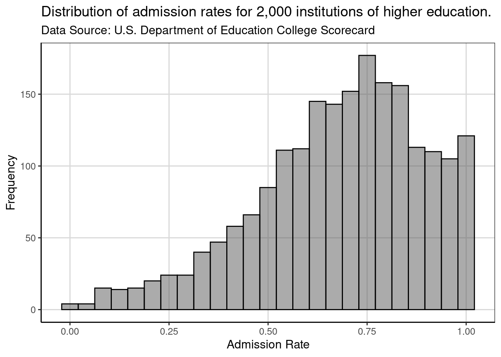
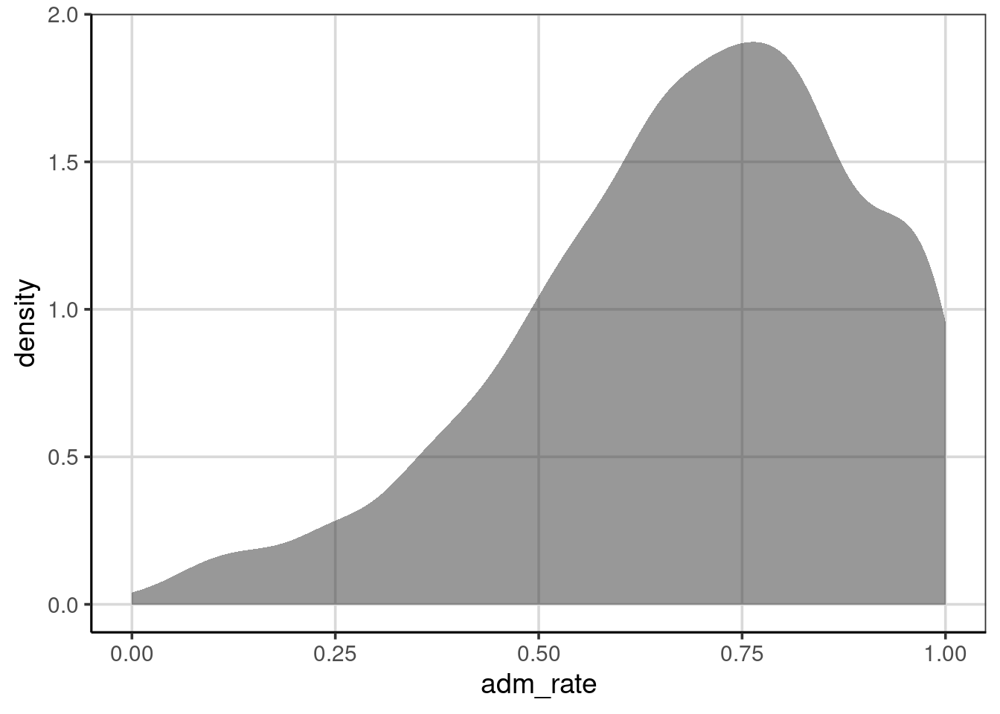

Chapter 2 Visualization
Data scientists and statisticians visualize data to explore and understand data. Visualization can help analysts identify features in the data such as typical or extreme observations and also for describe variation. Because it is so powerful, data visualiztion is often the first step in any statistical analysis.
2.0.1 College Scorecard Data
The U.S. Department of Education publishes data on institutions of higher education in their College Scorecard (https://collegescorecard.ed.gov/) to facilitate transparency and provide information for interested stakeholders (e.g., parents, students, educators). A subset of this data is provided in the file College-scorecard-clean.csv. To illustrate some of the common methods statisticians use to visualize data, we will examine admissions rates for 2,019 institutions of higher education.
Before we begin the analysis, we will load two packages, the tidyverse package and the ggformula package. These packages include many useful functions that we will use in this chapter.
library(tidyverse)
library(ggformula)There are many functions in R to import data. We will use the function read_csv() since the data file we are importing (College-scorecard-clean.csv) is a comma separated value (CSV) file..1 CSV files are a common format for storing data. Since they are encoded as text files they geerally do not take up a lot of space nor computer memory. They get their name from the fact that in the text file, each variable (i.e. column in the data) is separated by a comma within each row. The syntax to import the college scorecard data is as follows:
colleges <- read_csv(
file = "https://raw.githubusercontent.com/lebebr01/statthink/master/data-raw/College-scorecard-clean.csv",
guess_max = 10000
)In this syntax we have passed two arguments to the read_csv() function. The first argument, file=, indicates the path to the data file. The data file here is stored on GitHub, so the path is specified as a URL. The second argument, guess_max=, helps ensure that the data are read in appropriately. This argument will be described in more detail later.
The syntax to the left of the read_csv() function, namely colleges <-, takes the output of the function and stores it, or in the language of R, assigns it to an object named colleges. In data analysis, it is often useful to use results in later computations, so rather than continually re-running syntax to obtain these results, we can instead store those results in an object and then compute on the object. Here for example, we would like to use the data that was read by the read_csv() function to explore it. When we want to assign computational results to an object, we use the assignment operator, <- . (Note that the assignment operator looks like a left-pointing arrow; it is taking the computational result produced on the right side and storing it in the object to the left side.)
2.0.2 View the Data
Once we have imported and assigned the data to an object, it is quite useful to ensure that it was read in appropriately. The head() function will give us a quick snapshot of the data by printing the first six rows of data.
head(colleges)## # A tibble: 6 x 17
## instnm city stabbr preddeg region locale adm_rate actcmmid ugds
## <chr> <chr> <chr> <chr> <chr> <chr> <dbl> <dbl> <dbl>
## 1 Alaba… Norm… AL Bachel… South… City:… 0.903 18 4824
## 2 Unive… Birm… AL Bachel… South… City:… 0.918 25 12866
## 3 Unive… Hunt… AL Bachel… South… City:… 0.812 28 6917
## 4 Alaba… Mont… AL Bachel… South… City:… 0.979 18 4189
## 5 The U… Tusc… AL Bachel… South… City:… 0.533 28 32387
## 6 Aubur… Mont… AL Bachel… South… City:… 0.825 22 4211
## # … with 8 more variables: costt4_a <dbl>, costt4_p <dbl>,
## # tuitionfee_in <dbl>, tuitionfee_out <dbl>, debt_mdn <dbl>,
## # grad_debt_mdn <dbl>, female <dbl>, bachelor_degree <dbl>2.1 Exploring Attributes
Data scientists and statisticians often start analyses by exploring attributes (i.e., variables) that are of interest to them. For example, suppose we are interested in exploring the admission rates of the institutions in the college scorecard data to determine how selective the different institutions are. We will begin our exploration of admission rates by examining different visualizations of the admissions rate attribute. There is not one perfect visulaiztion for exploring the data. Each visualization has pros and cons; it may highlight some features of the attribute and mask others. It is often necessary to look at many different visualizations of the data in the exploratory phase.
2.1.1 Histograms
The first viualization we will examine is a histogram. We can create a histogram of the admission rates using the gf_histrogram() function. (This function is part of the ggformula package which needs to be loaded prior to using the gf_histogram() function.) This function requires two arguments. The first argument is a formula that identifies the variables to be plotted and the second argument, data=, specifies the data object we assigned earlier. The syntax used to create a histrogram of the admission rates is:
gf_histogram(~ adm_rate, data = colleges)
The formula we provide in the first argument is based on the following general structure:
~ attribute name
where the attribute name identified to the right of the ~ is the exact name of one of the columns in the colleges data object.
2.1.2 Interpretting Histograms
Histograms are created by collapsing the data into bins and then counting the number of observations that fall into each bin. To show this more clearly in the figure created previously, we can color the bin lines to highlight the different bins. To do this we include an additional argument, color=, in the gf_histogram() function. We can also set the color for the bins themselves using the fill= argument. Here we color the bin lines black and set the bin color to yellow.2
gf_histogram(~ adm_rate, data = colleges, color = 'black', fill = 'yellow')
Rather than focusing on any one bin, we typically want to describe the distribution as a whole. For example, it appears as though most institutions admit a high proportion of applicants since the bins to the right of 0.5 have higher counts than the bins that are below 0.5. There are, however, some institutions that are quite selective, only admitting fewer than 25% of the students who apply.
2.1.2.1 Adjusting Number of Bins
Interpretation of the distribution is sometimes influenced by the width or number of bins. It is often useful to change the number of bins to explore the impact this may have on your interpretation. This can be accomplished by either (1) changing the width of the bins via thebinwidth= argument in the gf_histogram() function, or (2) changing the number of bins using the bins= argument. Below we show both methods:
gf_histogram(~ adm_rate, data = colleges, color = 'black', fill = 'yellow', bins = 10)gf_histogram(~ adm_rate, data = colleges, color = 'black', fill = 'yellow', binwidth = .01)
In general, our interpretation remains the same, namely that most institutions admit a high proportion of applicants. When we used a bin width of 0.01, however, we were able to see that several institutions admit 100% of applicants. This was obscured in the other histograms we examined. As a data scientist these institutions might warrant a more nuanced examination.
2.2 Plot Customization
There are many ways to further customize the plot we produced to make it more appealing. For example, you might want to change the label on the x-axis from adm_rate to something more informative. Or, you may want to add a descriptive title to your plot. These customizations can be specified using the gf_labs() function.
2.2.1 Axes labels
To change the labels on the x- and y-axes, we can use the arguments x= and y= in the gf_labs() function. These arguments take the text for the label you want to add to each axis, respectively. Here we change the text on the x-axis to “Admission Rate” and the text on the y-axis to “Frequency”. The gf_labs() function is connected to the histogram by linking the gf_histogram() and gf_labs() functions with the pipe operator (%>%).
gf_histogram(~ adm_rate, data = colleges, color = 'black', fill = 'yellow', bins = 25) %>%
gf_labs(
x = 'Admission Rate',
y = 'Frequency'
)
2.2.2 Plot title and subtitle
We can also add a title and subtitle to our plot. Similar to changing the axis labels, these are added using gf_labs(), but using the title= and subtitle= arguments.
gf_histogram(~ adm_rate, data = colleges, color = 'black', fill = 'yellow', bins = 25) %>%
gf_labs(
x = 'Admission Rate',
y = 'Frequency',
title = 'Distribution of admission rates for 2,019 institutions of higher education.',
subtitle = 'Data Source: U.S. Department of Education College Scorecard'
)
2.2.3 Plot theme
By default, the plot has a grey background and white grid lines. This can be modified to using the gf_theme() function. For example, in the syntax below we change the plot theme to a white background with no grid lines using theme_classic(). Again, the gf_theme() is linked to the histogram with the pipe operator.
gf_histogram(~ adm_rate, data = colleges, color = 'black', fill = 'yellow', bins = 25) %>%
gf_labs(
x = 'Admission Rate',
y = 'Frequency',
title = 'Distribution of admission rates for 2,019 institutions of higher education.',
subtitle = 'Data Source: U.S. Department of Education College Scorecard'
) %>%
gf_theme(theme_classic())
We have created a custom theme to use in the gf_theme() function that we will use for most of the plots in the book. The theme, theme_statthinking() is included in the statthink library, a supplemental package to the text that can be installed and loaded with the following commands:
remotes::install_github('lebebr01/statthink')## Skipping install of 'statthink' from a github remote, the SHA1 (98b0498e) has not changed since last install.
## Use `force = TRUE` to force installationlibrary(statthink)##
## Attaching package: 'statthink'## The following object is masked _by_ '.GlobalEnv':
##
## collegesWe can then change the theme in a similar manner to how we changed the theme before.
gf_histogram(~ adm_rate, data = colleges, color = 'black', bins = 25) %>%
gf_labs(
x = 'Admission Rate',
y = 'Frequency',
title = 'Distribution of admission rates for 2,000 institutions of higher education.',
subtitle = 'Data Source: U.S. Department of Education College Scorecard'
) %>%
gf_theme(theme_statthinking())
2.2.3.1 Setting the default plot theme
Since we will be using this theme for all of our plots, it is useful to make it the default theme (rather than the grey bckground with white gridlines). To set a different theme as the default, we will use the theme_set() function and call our theme_statthinking() within this function.
theme_set(theme_statthinking())Now when we create a plot, it will automatically use the statthinking theme without having to specify this in the gf_theme() function.
gf_histogram(~ adm_rate, data = colleges, color = 'black', bins = 25) %>%
gf_labs(
x = 'Admission Rate',
y = 'Frequency',
title = 'Distribution of admission rates for 2,000 institutions of higher education.',
subtitle = 'Data Source: U.S. Department of Education College Scorecard'
)
2.3 Density plots
Another plot that is useful for exploring attributes is the density plot. This plot usually highlights similar distributional features as the histogram, but the visualization does not have the same dependency on the specification of bins. Density plots can be created with the gf_density() function which takes similar arguments as gf_histogram(), namely a formula identifying the attribute to be plotted and the data object.3
gf_density(~ adm_rate, data = colleges)
Our interpretation remains that most institutions admit a high proportion of applicants. In fact, colleges that admit around 75% of their applicants have the highest probability density.
The axis labels, title, subtitle can be customized with gf_labs() in the same manner as with the histogram. The color= and fill= arguments in gf_density() will color the density curve and area under the density curve, respectively.
gf_density(~ adm_rate, data = colleges, color = 'black', fill = 'yellow') %>%
gf_labs(
x = 'Admission Rate',
y = 'Probability density',
title = 'Distribution of admission rates for 2,019 institutions of higher education.',
subtitle = 'Data Source: U.S. Department of Education College Scorecard'
)